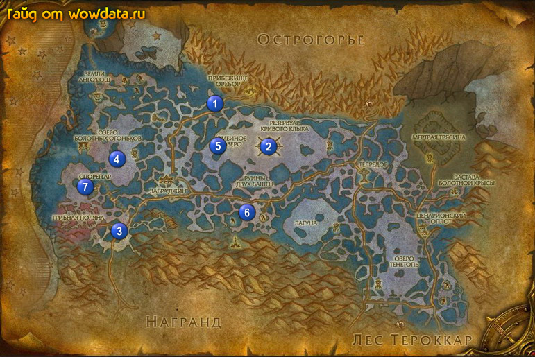

1) Начните у Макту (мастер брони) <Природная броня>, затем спуститесь вниз и начните в домике
1 (41, 29) у Пулуу <Яд паразита>, <Линии связи> и <Ужас озера Болотных Огоньков>.
2) Покинте город и идите на юго-восток к Змеиное озеро 2 (50, 41) бейте Болотный твердозуб для <Природная броня>, когда соберете нужное количество шкур заплывите в трубу 2 (50, 41) чтобы выполнить <Схема стоков>.
3) Идите на юг или юго-запад от ордынской базы и бейте Болотный терзатель для <Линии связи>, так же бейте Болотный паразит около Озеро Болотных Огоньков для <Яд паразита>, если вы увидите их.
4) Остановитесь у смотрового поста 3 (23, 66), закончите <Знакомые грибы> и начните <Ворованные грибы>.
5) Закончите бить Болотный терзатель, идите найдите 4 (22, 45) и убейте Жутеклешень (песпорядочно перемещается по небольшому дипазону) для <Ужас озера Болотных Огоньков>. Теперь идите доделайте <Яд паразита> вокруг этого озера.
6) Идите на северо-запад на отдельный остров в Зангартопь, отыщите там Властитель Кровавый Кулак (он в домике на с 2 гвардами над пещерой, после моста сразу направо) и убейте его для <Властитель Кровавый Кулак>, так же ищите коробки с грибами для <Ворованные грибы>, грибы еще падают с некоторых мобов. Доделайте оба квест (добейте мобов и дособерите ящики).
7) Вернитесь по руне в Прибежище Оребор, около гостиницы закончите <Властитель Кровавый Кулак>, чуть левее у продовца арморов закончите <Природная броня> и начните <Месть Макту>.
8) Внизу в доме закончите <Яд паразита>, <Линии связи> и <Ужас озера Болотных Огоньков>.
9) Плывите на Змеиное озеро 5 (41, 41) там в округе найдете Мрагеш, это гидра для одного из квестов, убейте ее.
10) Идите вниз к посту 3 (23, 66) закончите <Ворованные грибы>.
11) Если вы планируете пойти в Кривой Клык: Нижетопь то возмите 3 квеста туда в Спореггар.
12) Идите назад в Прибежище Оребор, около гостиницы закончите <Месть Макту>.
13) Теперь у вас должна быть репутация дружественная с Куренай.
14) Летите в Телредор.
15) Около фонтана закончите <Руины Бохаму>, начните <Идолы Зверотопи>, затем у дварфа напротив закончите <Проклятие черной бракониды>.
16) Плднемитесь к алхимикам и закончите <Прозрачные крылья>.
17) Снова сделайте Телредор вашим домом.
18) Идите на юго-запад в 6 (46, 60) и ищите идолы на земле (я их все собрал на лестнице в руины, уних очень большая скорость респа) для <Идолы Зверотопи>.
19) Вернитесь в Ценарионский оплот (в восточную часть).
20) В гостинице закончите <Необходимо поддерживать равновесие!> и <Схема стоков>, начните <Предупреждение Кругу Ценариона>.
21) Идите сдайте цветы за репутацию.
22) Бегите в Полуостров Адского Пламени к 7 (16, 52) и закончите <Предупреждение Кругу Ценариона>, начните <Возвращение на болота>.
23) Вернитесь в Ценарионский оплот и в гостинице закончите <Возвращение на болота>, игнорируйте следующую часть <Провалившийся рейд>.
24) Идите на север в Мертвая трясина и бейте Опаленная гидра и Высохший болотник для <Иссохшее тело>.
25) Бегите в Телредор, не используйте руну.
26) Спуститесь по правой лестнице и тут же закончите <Иссохшее тело>.
27) У фoнтана закончите <Идолы Зверотопи>, начните <Собирание реагентов>.
28) Идите на юг югo-запад от Телредор и около лагуны бейте Спороскат и Болотный долгоног для <Собирание реагентов>, это не очень далеко от города и имеют приличный шанс дропа.
29) Когда соберете все вернитесь в Телредор и закончите квест у фoнтана, начните <Посланец в Дикотопь>.
30) Идите к Руины Бохаму, выпейте эликсир чтобы превратиться в птицу, затем поговорите с 63 элитным мобом Старейшина Курути в башне.
31) Вернитесь по руне в Телредор и закончите у фантана <Посланец в Дикотопь>.
32) Идите по дороге из Телредор в Ценарионский оплот, здайте последние цветы за репутацию которые у вас есть, затем идите на юг в следующую локцию Лес Тероккар.